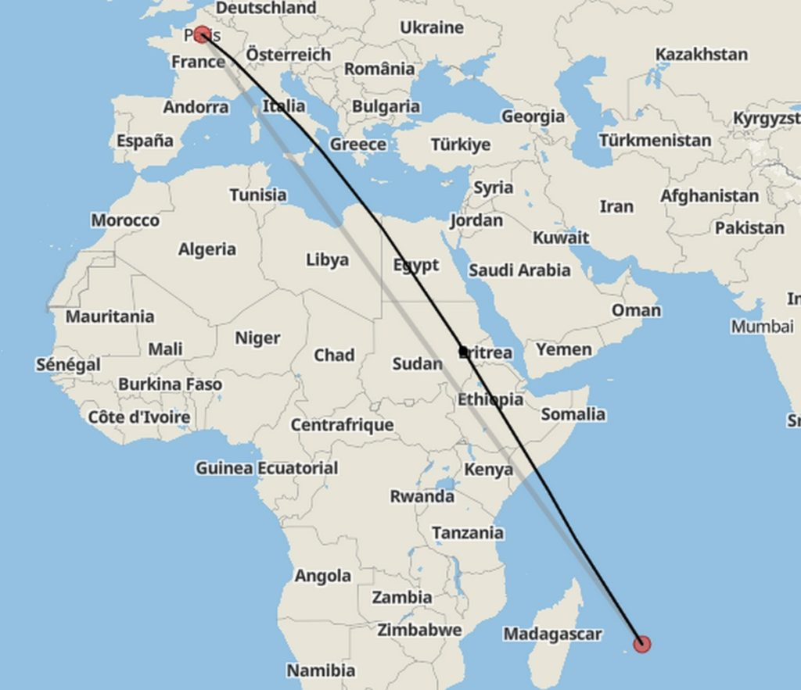
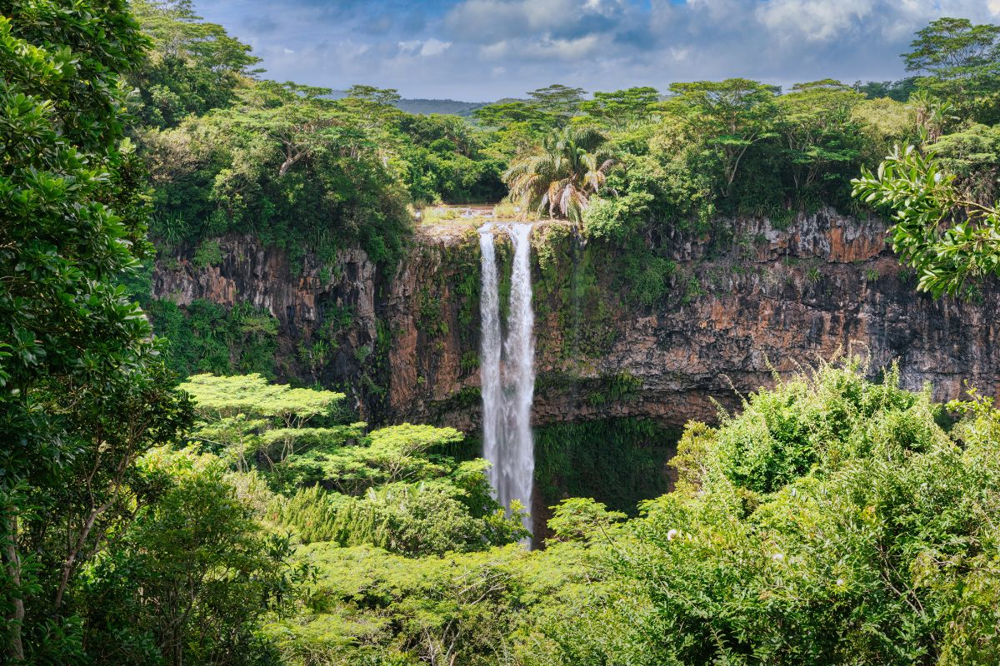
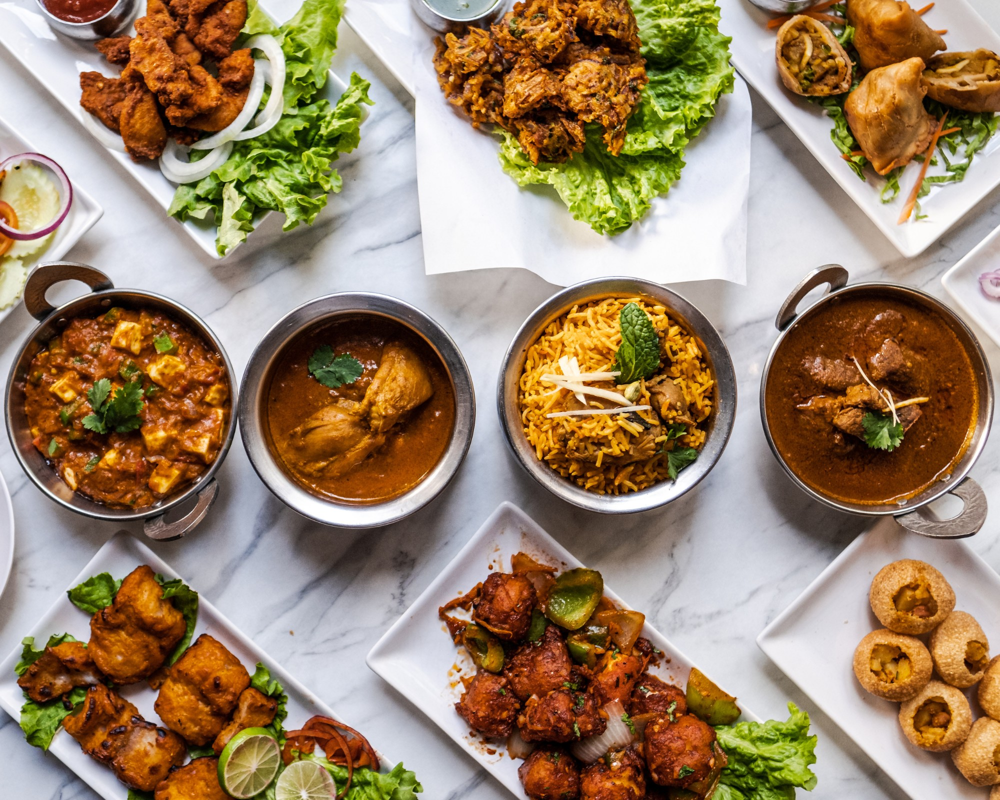
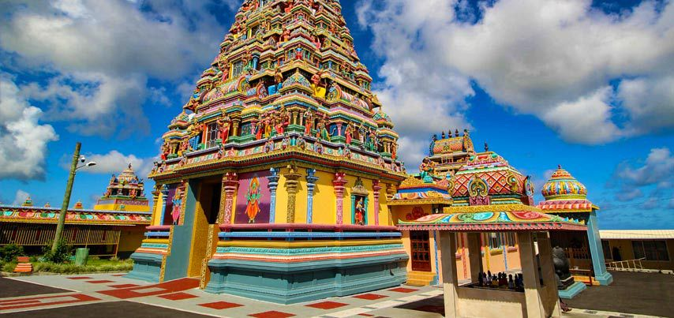
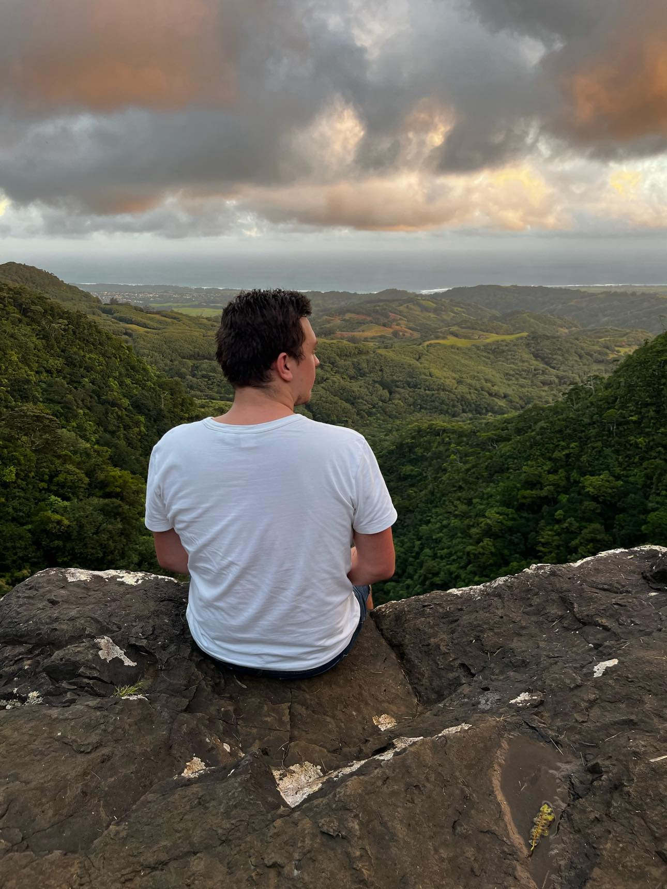

Bienvenue dans notre Voyage Extraordinaire vers l'ile Maurice
Une aventure unique à travers les merveilles de l'ile.
Destination Itinéraire Points FortsDépart dans
00
Jours
00
Heures
00
Minutes
00
Secondes
Notre Destination
Nous partons pour un voyage extraordinaire à travers les plus beaux endroits de l'ile. Notre itinéraire nous mènera des plages paradisiaques aux montagnes majestueuses, en passant par des villes historiques et des sites culturels exceptionnels.
Durée: 15 jours
1 pays visité
7 participants

Notre Itinéraire
Jour 1-2
Décollage de Paris
escale :
- Riyad
- Jeddah
- Maurice
Jour 3-13
L'ile ...
Découverte des sites culturels,plage, montagne ...
- Visite de l'ile
- Rencontre avec les locaux
- Bronzage
Jour 14-15
Le retour ...
Escale :
- djeddah
- Paris
- Stembert
Points Forts du Voyage

Nature Spectaculaire
Découvrez des paysages à couper le souffle

Cuisine Locale
Savourez les délices inconnu de vos papilles

Culture Authentique
Immergez-vous dans les traditions locales

Photos Uniques
Capturez des moments inoubliables